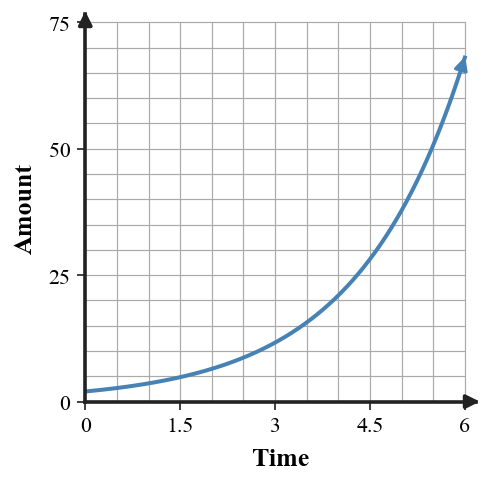
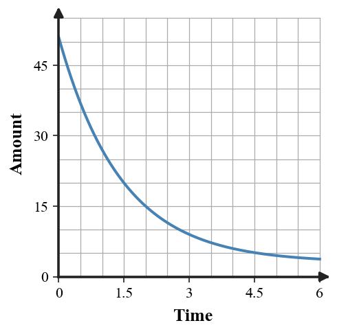
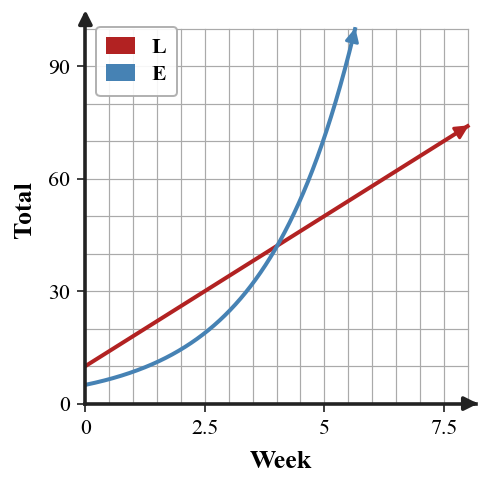
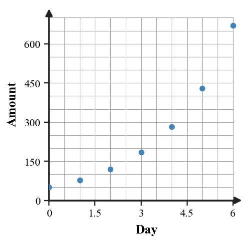
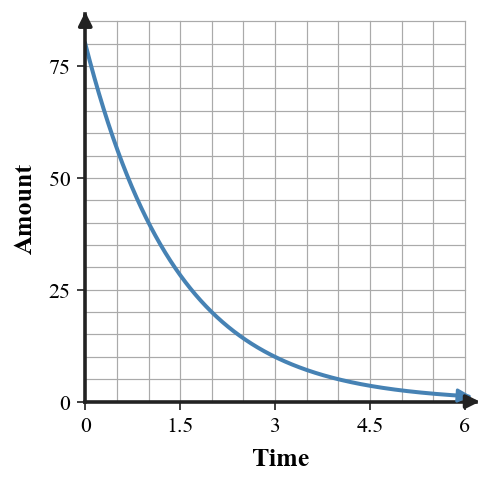

Unit 7 Progress Tracker
Students will analyze, represent, model, and interpret exponential relationships using patterns, tables, graphs, equations, and real-world situations.
I need more instruction and practice.
I understand most of it but need more practice.
I can do this independently.
I can teach it.
Progress Tracking
Progress Tracking
Evidence
Progress Tracking
Evidence
Progress Tracking
Evidence
Progress Tracking
Evidence
Learning Ladder
| Rung | I Can Statement | DOK | Level |
|---|---|---|---|
| 8 | I can design an exponential model from real-world data, use it to predict, and discuss what the model does and does not capture. | DOK 4 | Above |
| 7 | I can construct a multi-representation argument for whether a situation is best modeled by a linear, quadratic, or exponential function. | DOK 4 | Above |
| 6 | I can assess the reasonableness of an exponential equation, graph, or prediction in context. | DOK 3 | Essential |
| 5 | I can determine which function family is supported by evidence from rates, ratios, graph features, and contextual meaning. | DOK 3 | Essential |
| 4 | I can apply exponential equations and graphs to interpret key features and make predictions. | DOK 2 | Essential |
| 3 | I can construct exponential equations from tables, graphs, and situations using initial values and growth or decay factors. | DOK 2 | Essential |
| 2 | I can use constant ratios and repeated percent change to classify growth and decay patterns. | DOK 1 | Essential |
| 1 | I can read values from exponential tables, graphs, equations, and contexts. | DOK 1 | Essential |
Student Goal Setting
Unit 7 Practice by Depth of Knowledge
Format: 3-5 minute warm-up, vocabulary check, representation recognition, or exit ticket
Purpose: DOK 1 reveals whether students can read exponential representations, use basic vocabulary, and notice repeated multiplicative change before writing or analyzing models.
Assessment Ideas
- Growth and Decay Recognition Can Be Assessed After Section 7.1 - Classify situations, sequences, and tables as exponential growth, exponential decay, repeated addition, or neither; use constant ratios and common differences; connect pattern evidence to growth or decay labels.
- Multiplier and Initial Value Fluency Can Be Assessed After Section 7.2 - Use equations, percent-change statements, multipliers, and starting values; generate early outputs from an initial value and multiplier; distinguish growth from decay using multiplier size.
- Exponential Graph Feature Reading Can Be Assessed After Section 7.3 - Represent exponential equations with tables and plotted key points; read y-intercepts, horizontal asymptotes, and multiplier behavior from graphs and equations; connect vertical shifts to asymptote values.
- Function Family Evidence Fluency Can Be Assessed After Section 7.4 - Determine whether first differences, second differences, or ratios best reveal a function family; classify equations and data sets as linear, quadratic, exponential growth, exponential decay, or neither; use evidence beyond surface direction.
DOK 1 performance shows whether students can recognize exponential growth and decay, read multipliers and starting values, interpret basic graph features, and separate exponential evidence from linear or quadratic evidence before deeper modeling.
For each sequence, decide whether it shows repeated addition, repeated multiplication, or neither. State the common difference or common ratio when one exists.
- 4, 12, 36, 108, ...
- 90, 75, 60, 45, ...
- 3, 7, 13, 21, ...
- 160, 80, 40, 20, ...
Write the multiplier for each percent change.
- A 35% increase
- A 12% decrease
- A 6% increase
- A 70% decrease
Use each equation to identify the starting value, multiplier, and whether it represents growth or decay.
| Equation | Starting value | Multiplier | Growth/decay |
|---|---|---|---|
| $y=18(1.25)^x$ | _____ | _____ | _____ |
| $y=240(0.8)^x$ | _____ | _____ | _____ |
Complete the missing outputs using the same multiplicative pattern.
| Step | 0 | 1 | 2 | 3 | 4 |
|---|---|---|---|---|---|
| Pattern A | 7 | 21 | 63 | _____ | _____ |
| Pattern B | 500 | 250 | 125 | _____ | _____ |
Read the exponential graph. Estimate the initial value and decide whether the relationship is growth or decay.

Which table is most likely exponential? Use one ratio or difference to support your choice.
| $x$ | 0 | 1 | 2 | 3 |
|---|---|---|---|---|
| Table A | 5 | 10 | 15 | 20 |
| Table B | 5 | 15 | 45 | 135 |
| Table C | 5 | 8 | 13 | 20 |
Match each vocabulary word to what it describes: initial value, growth factor, decay factor, horizontal asymptote.
| Description | Vocabulary word |
|---|---|
| The output when $x=0$ | _____ |
| A multiplier greater than 1 | _____ |
| A multiplier between 0 and 1 | _____ |
| A value the graph approaches but does not cross in the basic model | _____ |
A phone battery keeps 85% of its charge each hour. Is this growth, decay, or not exponential? Write the multiplier.
Format: Mini-quiz, graph/table task, matching task, partner check, or short written task
Purpose: DOK 2 reveals whether students can move among tables, graphs, equations, and contexts while using exponential structure accurately.
Assessment Ideas
- Constant Ratio Evidence Can Be Assessed After Section 7.2 - Use tables and contexts to test for constant ratios; find multipliers and initial values for $y=ab^x$; complete growth and decay tables with evidence for exponential decisions.
- Writing Exponential Equations Can Be Assessed After Section 7.2 - Build exponential equations from tables, point pairs, and percent-change contexts; calculate multipliers before writing $y=ab^x$; use models to make rounded predictions.
- Graphing Exponential Features Can Be Assessed After Section 7.3 - Represent exponential functions with key-point graphs; interpret y-intercepts, horizontal asymptotes, growth or decay, and starting-value changes; compare graphs that share a multiplier.
- Model and Family Comparison Can Be Assessed After Section 7.5 - Evaluate linear and exponential models using tables, graphs, and scatter plots; estimate crossover points, starting values, and multipliers; choose reasonable model forms from evidence.
DOK 2 performance shows whether students can apply constant-ratio reasoning across tables, equations, graphs, contexts, and comparisons. The results reveal whether students can build and use exponential models rather than only naming them.
A population starts at 250 and grows by 18% each year. Write an exponential equation, then predict the population after 4 years.
Use the table to write an equation in the form $y=ab^x$. Then use the equation to predict the value at $x=5$.
| $x$ | 0 | 1 | 2 | 3 |
|---|---|---|---|---|
| $y$ | 6 | 15 | 37.5 | 93.75 |
A laptop is worth 900 dollars and loses 22% of its value each year. Write a decay model and estimate the value after 3 years.
Use the blank coordinate plane to graph $y=3(2)^x$ for $x=0,1,2,3,4$. Label the $y$-intercept and describe the end behavior in words.

The graph shows an exponential decay model with a horizontal asymptote above zero. Estimate the starting value, asymptote, and multiplier from visible points.

Compare the two models shown in the graph. Estimate where the exponential model becomes greater than the linear model, and explain how the growth patterns differ.

Use the scatter plot to choose a reasonable exponential model form. Estimate an initial value and multiplier, then use your model to make one prediction.

Decide which equation best models the situation: a medicine dose of 80 mg decreases by 30% each hour. Then use the model to estimate the amount after 5 hours.
- $y=80(1.3)^x$
- $y=80(0.7)^x$
- $y=80-30x$
- $y=30(0.8)^x$
Format: Constructed response, model critique, strategy comparison, representation analysis, or discourse prompt
Purpose: DOK 3 reveals whether students can reason with evidence, check model choices, and interpret exponential predictions within meaningful constraints.
Assessment Ideas
- Growth and Decay Error Analysis Can Be Assessed After Section 7.4 - Critique growth and decay classifications and incorrect percent multipliers; use ratio and difference tests to correct sequence, table, and model errors; connect corrected models to graph behavior.
- Representation Mismatch Analysis Can Be Assessed After Section 7.3 - Assess mismatched tables, graphs, contexts, and asymptote claims; correct values or statements; justify corrections using multipliers, equations, and long-run behavior.
- Function Family Critique Can Be Assessed After Section 7.4 - Evaluate claims comparing exponential, linear, and quadratic growth; use multiple input values, differences, and ratios; conclude which family or long-term behavior is supported.
- Data Modeling Strategy Can Be Assessed After Section 7.5 - Develop exponential modeling strategies for imperfect data; estimate multipliers from ratios or scatter plots; compare exponential and linear models and state limitations.
DOK 3 performance shows whether students can diagnose errors, reconcile mismatched representations, critique family claims, and justify modeling choices from numerical evidence instead of relying on surface appearance.
A student claims the table is exponential because the outputs increase each time. Critique the claim using ratios and differences, then state a better classification.
| $x$ | 0 | 1 | 2 | 3 | 4 |
|---|---|---|---|---|---|
| $y$ | 2 | 5 | 10 | 17 | 26 |
The graph and equation are supposed to represent the same model: $y=80(0.5)^x$. Use the graph to explain whether the equation is reasonable. Revise one part if needed.

A student models a 12% decrease using $y=a(1.12)^x$. Explain the multiplier error, revise the model form, and describe how the graph would change.
Two students choose different models for the same data.
| Day | 0 | 1 | 2 | 3 | 4 |
|---|---|---|---|---|---|
| Views | 100 | 150 | 225 | 338 | 506 |
One student chooses linear and one chooses exponential. Defend the better choice using numerical evidence and contextual meaning.
A prediction from $P(t)=400(1.4)^t$ says there will be more than 60,000 users after 15 weeks. Assess whether the calculation may be algebraically possible but contextually unreasonable.
Use the linear/exponential comparison graph to critique the claim, “The linear model is always larger because it starts above the exponential model.” Support your response with graph features and growth structure.
The scatter plot appears exponential, but one data point may be an outlier. Identify a possible outlier, explain its effect on the model, and describe one limitation of using a single multiplier.
A shifted decay model has horizontal asymptote $y=5$. Explain why a prediction below 5 would be unreasonable for the model, even if the expression includes decreasing values.
Format: Brief performance task, modeling task, critique-and-revise task, design task, or capstone synthesis task
Purpose: DOK 4 reveals whether students can synthesize exponential structure, model data, and make defensible choices across function families in short performance settings.
Assessment Ideas
- Growth and Decay Context Design Can Be Assessed After Section 7.2 - Design paired growth and decay contexts and equations from a shared initial value; make predictions from chosen multipliers; create models that meet checkpoint constraints and explain behavior differences.
- Exponential Model Revision Can Be Assessed After Section 7.5 - Adapt incorrect or incomplete exponential models; revise percent-change multipliers from contexts and tables; make predictions while noting realistic limitations.
- Function Family Evidence Synthesis Can Be Assessed After Section 7.4 - Validate function-family claims using tables and student reasoning; create or revise evidence sets; use differences and ratios to recommend and justify model families.
- Exponential Modeling Design Can Be Assessed After Section 7.5 - Model real-world exponential data sets, graph-based contexts, and competing view-count models; write equations and predictions; interpret asymptotes, limitations, and realistic fit.
DOK 4 tasks reveal whether students can design, revise, and synthesize exponential models in short performance settings. The work shows whether students can connect context, equation, data, prediction, limitation, and function-family evidence into a defensible model choice.
Design an exponential model from this data. Estimate a starting value and multiplier, write an equation, make a prediction for day 8, and explain one limitation of the model.
| Day | 0 | 1 | 2 | 3 | 4 |
|---|---|---|---|---|---|
| Amount | 50 | 78 | 119 | 185 | 282 |
Create a multi-representation argument for whether a situation is best modeled by a linear, quadratic, or exponential function. Include a table, an equation form, and at least two pieces of evidence.
A city model is written as $P(t)=12000(0.94)^t$ even though the population is increasing by about 6% per year. Critique the model, revise it, and compare the 10-year predictions from the old and revised models.
Design paired growth and decay contexts that both start at 500. Choose multipliers so the growth model is at least twice the decay model after 4 time periods. Write both equations and verify your constraint.
Use the scatter plot to build a short modeling report. Include an exponential equation, a prediction, a statement about fit, and a warning about using the model far beyond the data.
Compare two options for modeling a fundraiser: Plan A adds 40 donors each week, and Plan B starts with fewer donors but grows by 35% each week. Create equations, choose a decision point, and recommend a plan with evidence.
Revise an incomplete model: a student writes $y=2^x$ for a social-media post that begins with 120 views and grows by 60% per day. Explain what information is missing, write a better model, and interpret each parameter.
Create a data set with six points that is close to exponential but not perfect. Then describe how you would estimate a multiplier, how you would graph the data, and what model limitations you would tell someone using your prediction.